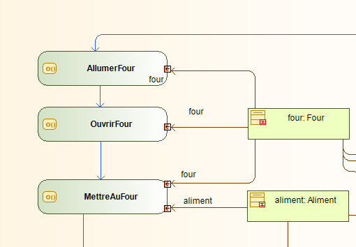

The objective of this internship was the implementation of a virtual reality and/or augmented reality environment to facilitate the execution of traceability and hygiene protocols.
I worked on three main aspects during this internship:
- Modeling a virtual reality environment in Unity, focusing on object animations and interactions between objects and the participant.
- Developing and implementing a training scenario centered around the cooking, rapid cooling, and storage procedure of a food product using Mascaret, a system developed by CERV.
- Integrating e-ManRisk's software into the 3D environment and enabling interactions using the Puppeteer library.
For this project, I used an Oculus Quest.
The initial part of the project involved understanding the requirements and discussions with the business team of the company.
The traceability and hygiene protocol to be implemented for this training had been chosen in advance.
It was a procedure for cooking, rapid cooling, and storing food, typically performed in the store's laboratories.
It was necessary to decide with the business team what type of training we were going to provide, as this would influence the support given to the learner and their freedom to interact in the 3D environment.
The final decision was to create an initial training: the objects to be used would be highlighted, and the procedure would be broken down into numerous simple actions, allowing the learner to more effectively assimilate the procedures they were being trained on.
 Explanation of a temperature measurement in an initial training
Explanation of a temperature measurement in an initial training
Subsequently, I explored different solutions for implementing the training in Virtual Reality.
For this project, I had the opportunity to collaborate with the CERV (European Center for Virtual Reality) in Brest, and I was able to use the system they were developing: Mascaret.
It's a system that links UML diagrams (including class and activity diagrams) with a virtual reality environment modeled in a 3D game engine like Unity to conduct training.

Example of an action sequence for Mascaret
The procedure that the learner is required to perform during this training can be quite lengthy, involving both cooking time and cooling time, which can last up to two hours.
In a real-world setting, an operator might perform other tasks or work with different foods while the food is cooking or cooling. However, in a training scenario, overloading the learner with additional items or multiple procedures would not be productive. Therefore, a method was needed to make time pass in the virtual environment without making cooking or cooling appear instantaneous. Two solutions were implemented to dimensionalize time within the environment: the use of clocks and the use of black screens.
Clocks
A clock was placed in the environment to indicate the time to the learner. Throughout the training, time progresses at a normal pace and is displayed on the clock. A second clock is positioned above the handwashing station to indicate the time the learner spends washing their hands and to ensure that this step takes more than 30 seconds.
Black Screens
The use of black screens to advance time is a widely used technique in both games and animations. I decided to use it when an action takes too long to complete. For example, when the learner places the chicken in the oven and it needs to cook, a black screen with the passage of time is displayed for a few seconds. This time also advances on the main clock to ensure consistency.
Food Contamination Management
This training primarily focuses on food hygiene, and the procedure aims to determine if food has potentially been contaminated by bacteria. It's important that food contamination is at the core of our virtual reality, making it visible for the learner to better perceive and confront whether the food is contaminated or not.
Visualization of Bacteria
To help the learner better understand the dangers of bacteria, we will apply a different appearance to the food when it's contaminated, as well as to the hands when they are dirty. This visualization makes food contamination more explicit and is more engaging and memorable than just stating that hands are dirty or that the food is contaminated.
Impact of Bacteria in the Training
In reality, operators do not know if food is contaminated or not until they reach the end of the rapid cooling procedure. Therefore, the choice was made to do the same in this training: a random value is assigned to the food at the start of the simulation to determine if it's contaminated or not.
The learner takes temperature measurements of the food when the rapid cooling procedure is complete, which will determine whether the food should be stored or not.
However, food contamination can also result from a failure to follow proper procedures. The learner begins the training with dirty hands, just as would happen in real life. If they touch food before washing their hands properly or if food touches the floor, it becomes contaminated. A few seconds later, a screen will notify the learner that the food is contaminated, and they must start over.
Integration of e-ManRisk Software into the Virtual Environment
The software developed by e-ManRisk is used to record the results of quality controls carried out in laboratories. The software is typically used on tablets because it's the most practical in this context. An essential part of this project was to enable the same functionality in virtual reality: having a tablet that allows users to operate the software and record the controls performed during the training.
Unity does not provide an integrated web browser within the 3D environment, and there are no free tools for this purpose. Developing such a tool would have been a substantial task, so an alternative solution was required to access the e-ManRisk application. The solution was to use the Puppeteer library.
The Puppeteer Library
The Puppeteer library enables interaction with a Chrome web browser via a Node server, similar to manual interaction on a regular computer but automated. It can simulate mouse clicks, keyboard keypresses, extract PDFs, or capture screenshots of web pages.
This is how we will navigate the e-ManRisk web application: a screenshot of the current page will be taken and displayed on the table within the virtual environment. Users should be able to click on the website, and the displayed page should change or elements should appear. We also want text fields to be fillable, so a virtual keyboard will need to be modeled for the tablet.
The Tablet in the 3D Environment
For precise interaction with the tablet, there will be two tablets in the virtual world. The first one will be placed in the laboratory at real size, which the user will pick up to transfer it in front of a larger interactive tablet. This larger tablet will be operated using a pointer, and if necessary, a keyboard will be displayed on it.